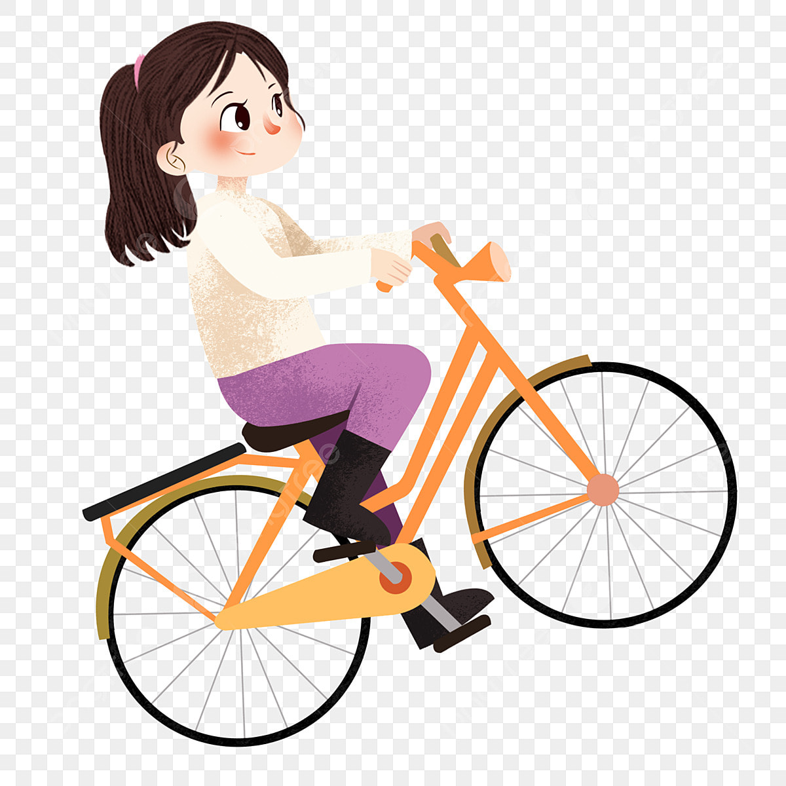

Bersepeda
Saya sangat suka bersepeda. Selain untuk menyehatkan badan, bersepeda juga dapat membuat pikiran kita terbuka dan segar.
Membaca Novel
Saya sangat suka membaca novel, terutama novel bergenre fantasi. Sudah lebih dari 10 buku novel yang sudah saya baca.

Mendengarkan Musik
Saya sangat senang mendengarkan musik. Saat bersepeda, saat membaca novel, atau bahkan saat mengerjakan tugas, saya selalu mendengarkan musik.